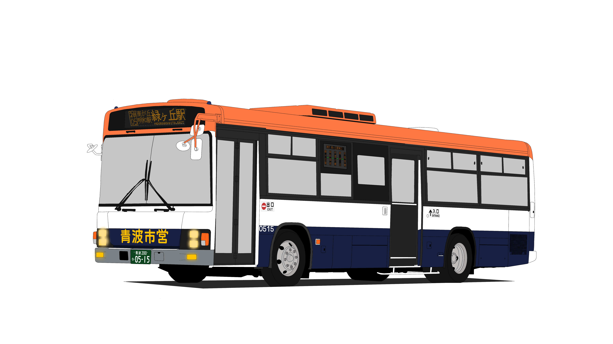

いすゞ エルガ KL-LV280N1
いすゞ自動車が2000年～2005年に製造した大型路線バス。V8エンジンの8PE1型エンジンを搭載し力強いエンジン音が特徴
- 製造年：2000~2005
- 導入年：2005年
- 導入数：50台
- 導入営業所：富沢・新森・港・青波
- 過去在籍営業所：神田
いすゞ自動車が2000年～2005年に製造した大型路線バス。V8エンジンの8PE1型エンジンを搭載し力強いエンジン音が特徴
いすゞ自動車が2007年～2010年に製造した都市型大型路線バス。
いすゞ自動車が2010年～2015年に製造した大型路線バス。2012年からはQPG,QKG,QDG-LV234N3の製造に移行
いすゞ自動車が2015年～2017年に製造した大型路線バス。エンジンは4HK1型を搭載し、燃費性能が向上。というのは建前でエンジンが非力すぎて現場からは不評
いすゞ自動車が2020年～2022年に製造した大型路線バス。エンジンは4HK1型を搭載。2125号車がプリウスミサイルによる事故で廃車